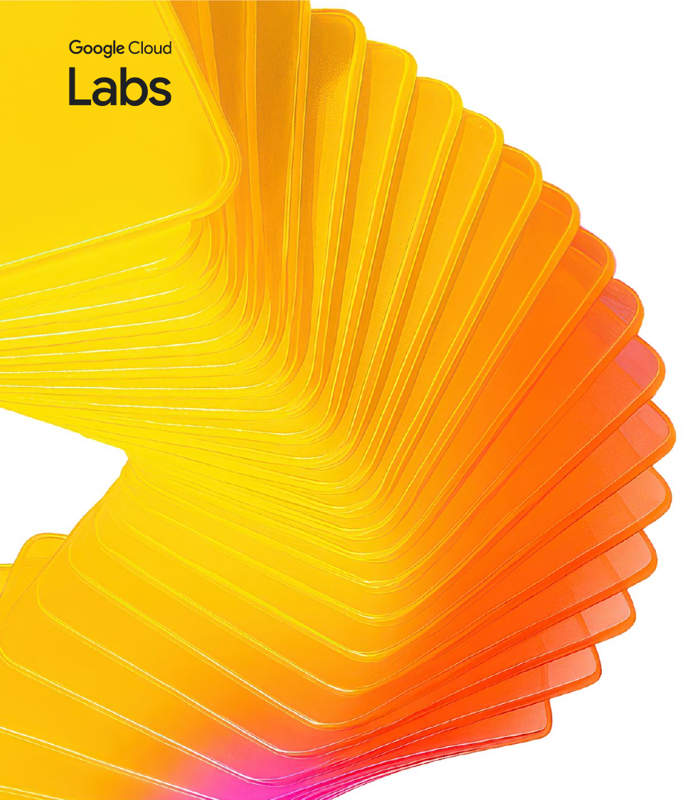
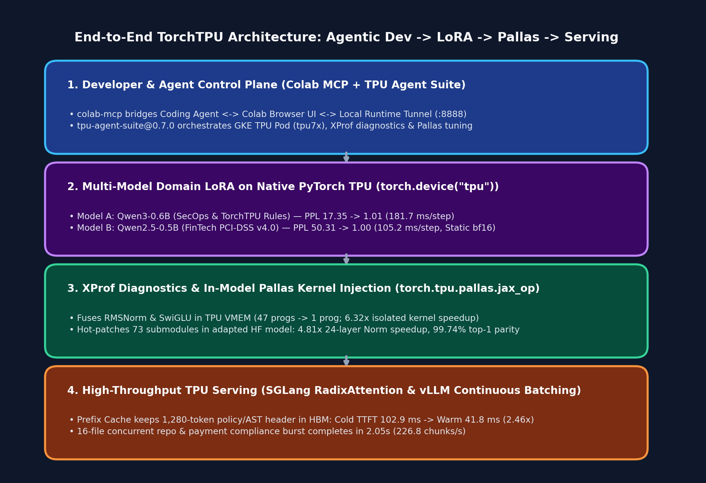
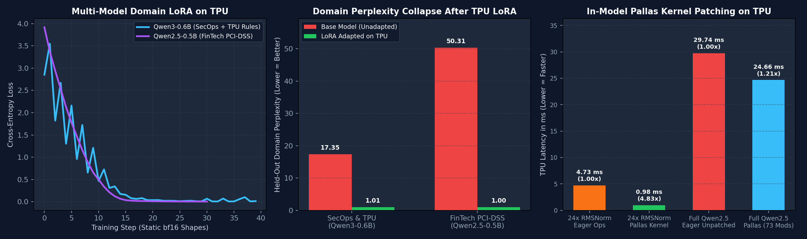
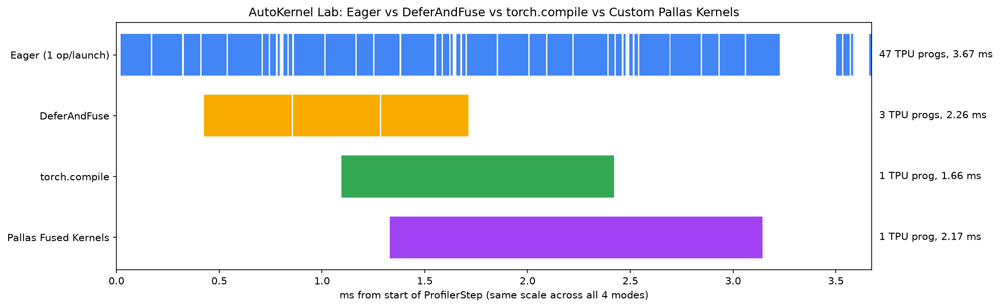
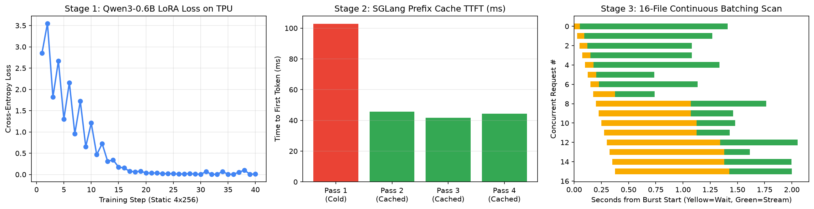

Rabimba
Karanjai
Google Developer Expert — AI & ML
AI Systems & Cloud TPU Engineering
Workshop Notebooks, Demos & Agent Suite
Everything we show today is reproducible in our Colab notebooks and CLI scripts
1. Master Showcase Notebook
notebooks/06_end_to_end_showcase...Multi-model LoRA adaptation, 73-submodule Pallas HF patching & serving.
2. SpecGuard TPU & AutoKernel
notebooks/04 & 05_*.ipynbApp A (LoRA -> SGLang Prefix Cache) and App C (4-Way XProf Pallas Lab).
3. GitHub Repo & Slides
github.com/rabimba/GDE-ML-ArtifactsAll benchmark JSON artifacts, XProf plots, and this interactive deck.
Why Do Enterprise AI Guardrails Hit a Wall in Production?
- A) Off-the-shelf base models hallucinate internal rules (PCI-DSS v4.0, ISO-20022, or TorchTPU migration rules) Click to Vote
- B) Eager PyTorch dispatch & dynamic sequence lengths trigger XLA recompilation and starve the TPU MXU Click to Vote
- C) Multi-pass audits re-prefill the same 1,280-token policy & AST header on every file or transaction Click to Vote

Native torch_tpu
& Multi-Model LoRA
XProf & Pallas
In-Model Kernels
SGLang & vLLM
Prefix Caching
The 4-Stage Full-Stack TorchTPU Architecture
From Agentic Colab Bridge to Prefix-Cached Serving
Every layer in our stack hands off cleanly to the next on a single Cloud TPU chip (`tpu7x` Chip 0):
- 1. Control Plane (`colab-mcp` + `tpu-agent-suite`): Connects your AI coding agent and Colab browser UI to a remote GKE TPU pod over `localhost:8888`.
- 2. Domain LoRA (`torch.device('tpu')`): Adapts `Qwen3-0.6B` (SecOps) and `Qwen2.5-0.5B` (FinTech PCI-DSS) using static `bfloat16` shapes.
- 3. In-Model Pallas Kernels (`jax_op`): Hot-patches 73 `RMSNorm` and `SwiGLU` submodules in-place with custom Pallas TPU kernels.
- 4. SGLang / vLLM Serving: Serves the merged checkpoint with RadixAttention prefix caching (`2.46x` Warm TTFT speedup).

🔍 Click diagram to enlarge full-screenDeveloper Workflow: Colab MCP + TPU Agent Suite
Zero-Friction Interactive TPU Development
How developers and coding agents connect to the exact same Cloud TPU runtime simultaneously:
- Colab Local Runtime Tunnel: Launch Jupyter on the TPU pod (`:8888`) with `--ServerApp.allow_origin='https://colab.research.google.com'` and port-forward to `localhost:8888`.
- `colab-mcp` Integration: Wire `uvx colab-mcp` into `.opencode/opencode.jsonc` so the coding agent can read, edit, and run Colab cells live in your browser.
- Single-Chip Isolation (`TPU_VISIBLE_CHIPS=0`): Pin each experiment to one chip and initialize `torch_tpu` before importing `jax` so PyTorch and Pallas share the PJRT runtime cleanly.
// 1. .opencode/opencode.jsonc
{
"mcp": {
"colab-mcp": {
"type": "local",
"command": ["uvx", "colab-mcp"]
}
}
}
# 2. Single-Chip PJRT Sharing (PyTorch + JAX Pallas)
os.environ.pop("TPU_VISIBLE_DEVICES", None)
os.environ["TPU_VISIBLE_CHIPS"] = "0"
os.environ["TPU_CHIPS_PER_HOST_BOUNDS"] = "1,1,1"
import torch, torch_tpu
_ = torch.ones(1, device="tpu") # Acquire PJRT first!
torch.accelerator.synchronize()
import jax # Shares PJRT client with torch_tpuNative PyTorch on TPU (torch_tpu)
Modern PrivateUse1 Backend + TorchDynamo
- Standard Device API: `device = torch.device('tpu')` and `torch.accelerator.synchronize()`.
- 3 Execution Gears: Eager (debug), `TORCH_TPU_DEFER_AND_FUSE=1` (graph cut), and `torch.compile(backend='tpu')`.
- First-Class Custom Kernels: `torch.tpu.pallas.jax_op` wraps any JAX/Pallas function as a native PyTorch op.
What to Avoid on Cloud TPU
Anti-Patterns That Hurt Throughput
- Deprecated `torch_xla`: Never import `torch_xla` or `xm.xla_device()`; all new workloads use `torch_tpu`.
- Dynamic Sequence Shapes: Variable-length batches force XLA recompilation on every step; pad to static buckets (`128`, `256`).
- Host-Device Sync in Loops: Calling `loss.item()` or `print(tensor)` mid-step stalls the asynchronous TPU execution pipeline.
Stage 1: Multi-Model Domain Adaptation
Specializing Two Distinct Models on `torch.device('tpu')`
Model A: Qwen/Qwen3-0.6B
Domain: SecOps & PyTorch-TPU Migration Auditor
# Prompt Input:
import torch_xla.core.xla_model as xm
dev = xm.xla_device()
# Adapted Model Output:
[CRITICAL | TPU-DEP-01] Deprecated torch_xla
import detected. Replace with:
import torch, torch_tpu; torch.device('tpu')- Training Config: 40 steps, static `4x256` `bfloat16`, LoRA `r=16, alpha=32` on `q/k/v/o_proj`.
- Convergence: Loss drops `2.8536 -> 0.0118` (`99.6%` reduction); Perplexity `17.35 -> 1.01`.
- Step Time: `181.72 ms/step` median on 1 `tpu7x` chip.
Model B: Qwen/Qwen2.5-0.5B-Instruct
Domain: FinTech PCI-DSS v4.0 & Payment Guard
# Prompt Input:
logger.info(f'PAN={card_num} CVV={cvv}')
# Adapted Model Output:
SEVERITY: CRITICAL | RULE: PCI-DSS-3.3.1 |
VIOLATION: Full PAN and CVV logged in cleartext.
REMEDIATION: Mask PAN (`tokenize_pan(card_num)`)- Training Config: 30 steps, static `6x128` `bfloat16`, LoRA `r=16, alpha=32` on `q/k/v/o_proj`.
- Convergence: Loss drops `3.9182 -> 0.0021` (`99.9%` reduction); Perplexity `50.31 -> 1.00`.
- Step Time: `105.23 ms/step` median on 1 `tpu7x` chip.
Empirical Results: Multi-Model LoRA & In-Model Pallas Patching
- Panel 1 — Smooth Zero-Recompile Convergence: Both `Qwen3-0.6B` (SecOps) and `Qwen2.5-0.5B` (FinTech PCI-DSS) converge smoothly below `0.02` cross-entropy loss in 30–40 steps using static `bfloat16` batches.
- Panel 2 — Domain Perplexity Collapse: Held-out domain perplexity drops from `17.35 -> 1.01` on SecOps/TPU rules and `50.31 -> 1.00` on FinTech PCI-DSS rules.
- Panel 3 — In-Model Pallas Patching Speedup: Replacing 24-layer `RMSNorm` ops with our Pallas kernel yields a `4.81x` speedup (`4.73 ms -> 0.98 ms`), and patching all 73 `RMSNorm` + `SwiGLU` submodules accelerates the full 24-layer HF model forward pass by `1.21x` (`29.74 ms -> 24.66 ms`).
- Checkpoint Merge (`merge_and_unload()`): LoRA weights fold into base linear layers so downstream inference pays zero adapter overhead.

Measured on Cloud TPU (tpu7x Chip 0): Multi-Model LoRA Convergence, Perplexity Collapse & 73-Submodule Pallas Patching (Click to zoom)
Qualitative Verification: Unadapted Base vs. TPU LoRA Adapted
Before vs. After: SecOps & TPU Auditor
Audit: `import torch_xla.core.xla_model as xm; dev = xm.xla_device()`
[CRITICAL | TPU-DEP-01] Deprecated torch_xla import detected. Migrate to native `import torch, torch_tpu` and `torch.device('tpu')`.
Verification Goal: Base model before LoRA gave vague generic advice ('update external library'); adapted model emits exact rule ID and remediation.FinTech PCI-DSS & Payment Guard Verdicts
Flags `PAN={card_number} CVV={cvv}` in `logger.info` and prescribes `tokenize_pan(card_number)` vaulting.
Catches per-transaction `.item()` syncs and dynamic batch padding that would violate a 50ms payment SLA.
Stage 2: AutoKernel Lab (XProf & Pallas)
Benchmarking 4 Execution Modes on a 4-Layer Decoder Stack
Shape (8, 1024, 2048) bfloat16 on Cloud TPU (tpu7x Chip 0)
We benchmarked a 4-layer Qwen3/Llama SwiGLU decoder stack across all four `torch_tpu` execution gears and counted the dispatched TPU programs per step in XProf:
Eager Mode
3.591 ms (1.00x)
47 separate TPU programs/step! Every add, square, mean, rsqrt, and silu round-trips to HBM.
DeferAndFuse
2.126 ms (1.69x)
TORCH_TPU_DEFER_AND_FUSE=1 clusters ops between sync points into 3 TPU programs/step.
torch.compile
1.579 ms (2.28x)
TorchDynamo + XLA whole-graph compilation fuses the entire 4-layer stack into 1 TPU program.
Pallas Kernels
2.224 ms (1.61x)
1 TPU program/step; isolated 8-layer pallas::fused_res_rmsnorm achieves 0.409 ms vs 2.587 ms eager (6.32x)!
Inside the XProf Trace: 47 Dispatches vs. 1 Fused Program
- Why Eager Mode Fragments the Timeline: In the top row of the XProf waterfall, 47 tiny `xla_Launch` ops leave gaps between kernels and waste HBM bandwidth.
- In-VMEM Pallas Fusion (`pallas::fused_res_rmsnorm`): Tiles `(128, D)` blocks into TPU VMEM, accumulates `r * r` in `float32`, applies `rsqrt`, and writes normalized `bfloat16` outputs in one pass.
- In-VMEM SwiGLU (`pallas::fused_swiglu`): Computes `(gate * sigmoid(gate)) * up` entirely in VMEM registers (`max_abs_diff = 4.77e-07`).
- 6.32x Isolated Kernel Speedup: Across 8 stacked Residual+RMSNorm layers on `(8, 1024, 2048)`, Pallas drops latency from `2.587 ms` to `0.409 ms`.

XProf TPU Execution Timelines & Speedup Comparison Across Eager, DeferAndFuse, torch.compile, and Pallas (Click to zoom)
How Developers Hot-Patch a Hugging Face Model with Pallas
Replacing 73 Submodules in Qwen2.5-0.5B In-Place
You don't need to rewrite `transformers` from scratch to use Pallas kernels in an adapted model:
- Step 1: Register with `torch.tpu.pallas.jax_op`: Wrap your JAX `pl.pallas_call` function as a callable PyTorch operator (`pallas::hf_rmsnorm`, `pallas::hf_swiglu`).
- Step 2: Reusable `autokernel` Package (`pip install -e ./autokernel`): Call `autokernel.init_tpu(chip=0)` + `autokernel.patch_hf(model)` to swap all 73 RMSNorm & SwiGLU submodules in 2 lines (`unpatch_hf` restores them).
- Step 3: Verified on `tpu7x` Chip 0 + `pytest` (`10/10 PASS`): Swaps 73 modules in 24-layer Qwen2.5: `4.81x - 5.47x` 24L Norm speedup, `1.21x` full-model speedup & `99.74%` top-1 token agreement!
import autokernel
# 1. Isolate Chip 0 & wake up torch_tpu BEFORE JAX loads
autokernel.init_tpu(chip=0, defer_and_fuse=True)
# 2. Hot-swap 49 RMSNorm + 24 SwiGLU MLP layers in memory
report = autokernel.patch_hf(merged_model)
print(report.total_patched) # -> 73 (0 weight bytes copied)
# 3. Verify speedup, max_abs_diff, and top-1 agreement
bench = autokernel.verify_parity_and_speedup(
stock_fn, patched_fn, sample_input
)
# Reversible anytime: autokernel.unpatch_hf(merged_model)Stage 3: SpecGuard TPU — SGLang Prefix Cache & 16-File Burst
- Serving the Merged LoRA Checkpoint on TPU: Launched `sglang.launch_server --model-path /tmp/specguard-qwen3-0.6b-merged --device tpu --tp-size 1 --enable-torch-compile --enable-cache-report`.
- RadixAttention Prefix Cache (`2.46x` Warm TTFT Speedup): Pass 1 (Cold Cache) prefills a ~1,357-token shared SecOps/TPU policy & AST header in `102.86 ms`. Pass 2 & Pass 3 hit `1,280` cached tokens in TPU HBM, slashing TTFT to `41.80 ms` (`2.46x` faster)!
- 16-File Concurrent Continuous Batching Burst: Auditing 16 repository chunks concurrently completes in `2.05 s` wall time (`226.8 chunks/s` throughput, `64.5 ms` median per-request TTFT).

SpecGuard TPU End-to-End Dashboard: LoRA Loss Curve, SGLang Prefix Cache TTFT (2.46x), and 16-File Concurrent Burst (Click to zoom)
How Developers Adopt This Stack in 3 Steps
Connect & Onboard (`tpu-agent-suite`)
runtime.py compute inspect && uvx colab-mcp
Adapt & Patch (`torch_tpu` + `peft` + `pallas`)
python domain_adapt_and_pallas_patch.py
Serve & Audit (`sglang` / `vllm` on TPU)
python stage2_serve_and_audit.py
Key Rules for Reliable TPU Deployments
1. Always isolate single-chip jobs with TPU_VISIBLE_CHIPS and initialize torch_tpu before importing JAX. 2. Pad training & batch-scoring inputs to static buckets (128, 256, 1024) to eliminate XLA recompilation. 3. Structure multi-turn / multi-file prompts with a shared static prefix so SGLang RadixAttention caches 90%+ of prefill tokens.
# 1. Run 4-way AutoKernel Lab (Eager / DAF / Compile / Pallas)
python demos/06_autokernel_app/autokernel_lab.py all
# 2. Run Multi-Model Domain LoRA + 73-Submodule Pallas Patching
python demos/07_domain_adaptation_showcase/domain_adapt_and_pallas_patch.py
# 3. Run SpecGuard LoRA + SGLang Prefix Cache & 16-File Burst
python demos/05_specguard_app/stage1_lora_finetune.py
python demos/05_specguard_app/stage2_serve_and_audit.pyExecutive Summary: Verified Cloud TPU (`tpu7x`) Results
Every metric across our three showcase applications was measured live on Cloud TPU (`tpu7x` Chip 0):
- • Multi-Model Domain LoRA Adaptation: `Qwen/Qwen3-0.6B` (SecOps/TPU) loss `2.8536 -> 0.0118` (PPL `17.35 -> 1.01`, `181.7 ms/step`); `Qwen/Qwen2.5-0.5B-Instruct` (FinTech PCI-DSS) loss `3.9182 -> 0.0021` (PPL `50.31 -> 1.00`, `105.2 ms/step`).
- • AutoKernel Lab (4-Layer Decoder Stack): Eager `3.591 ms` (47 TPU progs) -> `DeferAndFuse` `2.126 ms` (`1.69x`, 3 progs) -> `torch.compile` `1.579 ms` (`2.28x`, 1 prog) -> `Pallas` `2.224 ms` (1 prog, `6.32x` isolated 8-layer RMSNorm speedup: `0.409 ms` vs `2.587 ms`).
- • In-Model Pallas HF Submodule Patching: Hot-patching 73 `RMSNorm` + `SwiGLU MLP` submodules in `Qwen2.5-0.5B` delivers `4.81x` 24-layer RMSNorm speedup (`4.73 ms -> 0.98 ms`) and `1.21x` full-model speedup (`29.74 ms -> 24.66 ms`) with `99.74%` top-1 token agreement.
- • SpecGuard SGLang Serving & Burst: RadixAttention prefix cache cuts TTFT from `102.86 ms` (Cold) to `41.80 ms` (Warm, `2.46x` speedup, `1,280` cached tokens); 16-file concurrent burst finishes in `2.05 s` (`226.8 chunks/s`).
Thank You!
Rabimba Karanjai
Google Developer Expert (AI/ML)
github.com/rabimba/GDE-ML-Artifacts
 Connect on LinkedIn
Connect on LinkedIn